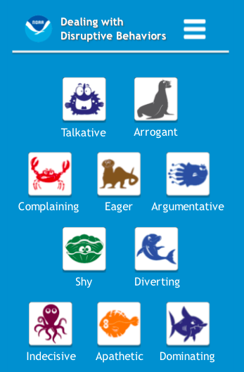

class: title-slide <div align="center" style="padding-top: 2rem;"> <p>Managing Research Software Projects</p> <h1>Governance</h1> <p> <img src="../files/codebender.svg" alt="logo" width="20%" /> </p> </div> --- class: subhead ## "But I Don't Even Own a Tie" - Jess's simulator is now a separately-funded project - Two full-time staff - Two dozen community contributors - A few hundred users - Jess can no longer make all the decisions themself - And shouldn't --- ## Governance Models - <https://communityrule.info/> describes [lots of options]($root/files/gov-booklet-MASTER.pdf) - Benevolent dictator (often the project founder) - Common in young projects - Brittle: founder can move on - Leads to emergence of unofficial (i.e., unaccountable) leaders - Consensus-based - If most people agree on most things most of the time - But again, the most self-confident members of the community usually become unaccountable de facto leaders - Elected representation - Explicit rules for suffrage --- class: sidebar ## "Hero" Programmers - Brooks advocated a "chief programmer" model in the 1970s [<a href="../bibliography/#Brooks1995">Brooks1995</a>] - Disparaged since then - But 80% of projects on GitHub are hero projects [<a href="../bibliography/#Majumder2019">Majumder2019</a>] - 5% or less of people responsible for 95% or more of interactions - "Heroes" commit far fewer bugs than other contributors - Despite terminology, not a bad model for research projects - [<a href="../bibliography/#Petre2014">Petre2014</a>] found that people without domain knowledge couldn't review scientific code effectively --- class: sidebar ## What "Not Leadership" Looks Like - GitHub's [Minimum Viable Governance][github-mvg] guidelines got this wrong: > **2.1. Consensus-Based Decision Making** > > Projects make decisions through consensus of the Maintainers. > While explicit agreement of all Maintainers is preferred, it is not required for consensus. > Rather, the Maintainers will determine consensus based on their good faith consideration of a number of factors, > including the dominant view of the Contributors and nature of support and objections. > The Maintainers will document evidence of consensus in accordance with these requirements. --- ## Martha's Rules - A lightweight alternative to formal parliamentary procedure [<a href="../bibliography/#Minahan1986">Minahan1986</a>] - Anyone can put forward a proposal by filing it at least 24 hours before a scheduled meeting - No sandbagging <div align="center"> <table> <tr><td>One-line summary</td><td>Background</td></tr> <tr><td>Concrete proposal</td><td>Pros and cons</td></tr> <tr><td>Alternatives</td><td>Links</td></tr> </table> </div> - At most two pages - We use GitHub issues - The real purpose of a classical education --- ## Establishing a Quorum - A quorum is established if half or more of voting members are present - Which means there must be: - A rule about how to become a member - A rule about when and how someone stops being a member - The meeting may not discuss or vote on a proposal unless its sponsor is present <div align="center"> <p> <img src="../files/meeting.svg" alt="Meeting" width="40%" /></a> </p> </div> --- ## Presenting a Proposal - The sponsor presents the proposal - Which everyone should have read - Members cast a *sense vote*: support, neutral, or oppose - If everyone supports or is neutral, motion passes - If a majority is opposed or neutral, send back to sponsor - Otherwise, set a timer for 10 minutes of moderated discussion - Then call a final binary vote in which everyone must support or oppose - No neutral votes allowed - If a majority support, the proposal is accepted - Otherwise, it is returned to the sponsor for further work --- class: subhead ## Meetings - On par with interruptions for "things people wish they could have less of" - Unlike interruptions, can be done well - As with governance, having rules is the first and biggest step toward efficiency --- ## 1. Does There Need To Be a Meeting? - To *inform*? Only if you are expecting questions - To *consult*? Only if people get a vote - Otherwise it's just informing with pretense - To *discuss* and *make decisions*? Yes - But only in small groups - Or with well-defined procedural rules - To *brainstorm* or *collaborate*? - That's a very different kind of meeting --- ## 2. Create An Agenda - If you don't care enough to make a list, you don't need a meeting - Include timings - Prioritize - Plan to end early - "The most fundamental unit of time is the bladder" --- ## 3. Clear Rules for Making Decisions - "The Tyranny of Structurelessness" [<a href="../bibliography/#Freeman1972">Freeman1972</a>] - If you need Robert's Rules, you need training --- ## 4. Put Someone in Charge - The moderator should *not* do most of the talking - Any more than the conductor plays most of the notes - Call on specific people in order - Allow them one point at a time - Keep a backlog --- ## 5. Require Politeness - All the other rules are special cases of this… - No technology during in-person meeting - Except for assistive technology or family need - "Please put your devices in politeness mode" - No interruptions - Except by moderator - No rambling - You *do* have a Code of Conduct, right? --- ## 6. Record Minutes - So people who weren't there know what happened - So people who were there agree what happened - So people can be held accountable at later meetings --- ## 7. Manage "That Guy" <p> </p> <div class="flex-row"> <div class="flex-col">  </div> <div class="flex-col"> <ul> <li>Three stickies</li> <li>Interruption bingo</li> <li><a href="https://coast.noaa.gov/ddb/">https://coast.noaa.gov/ddb/</a></li> </ul> </div> </div> --- ## 8. Be an Active Participant - Decline invitations - *If* you agree to abide by what the meeting decides - Read the agenda and material before the meeting - Take your own notes - Use participants' names - Pause before speaking - Put down your hand --- ## 9. Life Online - No mixed-mode meetings - All in person or all online - Do not record the meeting without willing consent - Review meeting protocol at the start if necessary - Take minutes in a shared document - Raise hands digitally - `/hand` in the chat is good - `/hand another budget item` is better --- ## 10. Seek Truth, Not Victory - No social dominance displays - "Well actually…" - Don't raise points you don't actually believe in - The devil doesn't need more advocates - Don't make excuses for your questions or opinions - "This is probably stupid, but…" --- class: sidebar ## Recommended reading - [<a href="../bibliography/#Brookfield2016">Brookfield2016</a>] has a lot of good ideas for managing discussion <div align="center"> <p> <img src="../files/discussion-book.jpg" alt="The Discussion Book cover" width="40%" /></a> </p> </div> --- class: exercise ## Who Decides? 1. Who gets a vote in your group? 1. How are new people added to that pool? 1. When and how do people lose their votes? 1. Where and how do other people find out what has been decided and how it affects them? 1. Where and how can non-voters raise issues? [github-mvg]: https://github.com/github/MVG